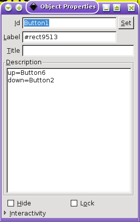
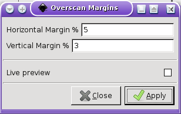
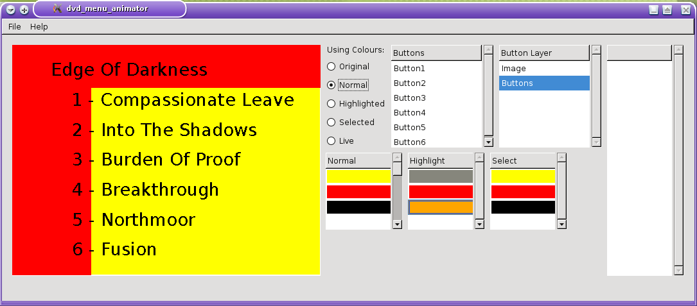

DVD Menu Animator is a tool to aid in the design of DVD-Video menus. It is meant to be used in conjunction with dvdauthor and Inkscape: you use Inkscape to do the main design of the menu appearance and button placement; choose additional highlight and selection colours in DVD Menu Animator; then put the results through the spumux tool (part of dvdauthor) to generate the menu.
DVD Menu Animator consists of three parts: the main program, which is a Python script, an extension module referenced by that script, called spuhelper, which needs to be compiled, and an “Overscan Margins” plug-in for Inkscape. To build and install everything, just do this as superuser in the directory containing the source files:
python setup.py install
Start by creating a new drawing for your menu in Inkscape. The actual dimensions and measurement units don’t matter; what does matter is the aspect ratio (ratio of the width of the drawing to its height): this should be either 4:3 (narrowscreen) or 16:9 (widescreen). Typically you will want to match the aspect ratio of the video footage you are going to include on the DVD.
There is no limit on the complexity of the designs you can create, fonts you can use etc, but bear the following in mind:
Your design must have a minimum of two layers (though it can use more). This is because DVD Menu Animator expects the topmost layer to contain information about the buttons in your menu. You can name the layers what you like, but it’s probably a good idea to name the topmost one something like “Buttons”, to help remind yourself what it’s for.
In the button layer, each button is represented as a rectangle object. (The DVD-Video spec requires buttons to be rectangles, which is why you can’t use any other shape.) The fill and stroke settings you assign to buttons don’t matter; I’d recommend an empty fill, and a thin stroke just sufficient so you can see the locations of the buttons against your underlying menu graphic, to verify that they are lined up properly, without obscuring too much of the actual graphic. Whether you set this layer to visible or not when you save the drawing also doesn’t matter (though of course it does matter for the other layers making up the menu image.) Use this layer only for defining the buttons, because anything else you put on it will be ignored.
Oh, and colours you use on the button layer don’t count towards the 4-colour limit.
Besides creating a rectangle for each button, you also have to give each button a unique name. To do this, click the button rectangle and select “Object Properties...” from Inkscape’s Object menu. In the resulting dialog, enter the button name in the id field (the Label and Title are ignored):

You can also define here which neighbouring buttons the user will go to from this one if they use the arrows on their remote. This information goes in the Description field, where you can specify any or all of the following, one to a line, in any order:
Note these settings are case-sensitive, and spaces are not allowed.
Don’t forget to click the “Set” button before closing this dialog.
Once you’ve finished the above steps, save your Inkscape drawing and start up DVD Menu Animator.
Unfortunately, it is a “feature” of consumer televisions that they do not show the entire video image on the screen. Instead, a few percent is cut off at the edges. Video footage needs to be shot with this in mind, and so does the design of your menus.
To help you keep your design from encroaching into the unsafe area, use the included Overscan Margins plugin. In the current (0.4x) versions of Inkscape, you will find this under the “Extensions” menu, in the “Video” submenu:

Type in numeric percentages of the horizontal and vertical image dimensions, and when you click “Apply”, a new layer will be added to the drawing, containing a grey fill in the margins of appropriate thickness. Simply ensure no important part of your design overlaps any part of the margins. Don’t forget to hide or delete this layer before saving your menu.
In DVD Menu Animator, select “Load Menu Image...” under the File menu to load the SVG file you created with Inkscape. If all goes well, you should see it appear on the left side of the main DVD Menu Animator window:

Next to the image is a set of radio buttons title “Using Colours:”. This lets you display the menu image in its various states. We will come back to this in a moment.
To the right of these radio buttons are two lists, titled “Buttons” and “Button Layer”. You can verify that the “Buttons” list contains the names you assigned to your buttons. This list doesn’t serve any other purpose as the moment. The “Button Layer” list shows the layers in your drawing, with the topmost (button) layer already preselected. Don’t click in this list—I should probably get rid of it.
To the right of these is a tall, empty list. You can load a GIMP-format (.gpl) colour palette with the “Load Colours...” option under the File menu, and then drag colours to from here to the elements in the other colour lists.
Now we come to the three important colour lists, titled “Normal”, “Highlight” and “Select”. The first one contains the colours that will be used for all the buttons in their normal state; the second one will be used for the button that the user has currently highlighted with their remote; and the third one will be used to briefly display the highlighted button when the user hits the OK/Enter button. All three lists are initially populated with the original colours from your drawing, but you are free to change them.
You’ll note that the first list usually contains more than 4 colours. The additional ones are the result of anti-aliasing by the SVG renderer to make the graphics look smoother. Unfortunately, the DVD-Video spec doesn’t allow for such anti-aliasing, so DVD Menu Animator has to undo its effects, by mapping those extra colours onto the closest-available ones of the most popular 4 in the image (the first 4 entries in the list). Before doing so, it does a check that the image “predominantly” consists of just 4 colours (where “predominantly” means “at least 95% of the pixels”). If it does not, then you will see a message like this at the bottom of the main window:
852 colours is too many, mustn't exceed 4
and you will have to go back to Inkscape to simplify your menu graphic.
You can double-click the colours in these lists to bring up a chooser dialog that lets you change them; or you can drag and drop between entries in different lists, and also from the loaded-palette list at the right, as mentioned previously.
And now we come to those “Using Colours:” radio buttons I mentioned earlier. These let you display the menu graphic in the following states:
DVD-Video allows colours in a menu to be partially or totally transparent. You can control this with the Opacity slider in the colour chooser that appears when you double-click a colour. For example, you might start out with a white background for your menu in Inkscape, but in DVD Video Animator you can turn this background transparent, so the actual video image for the menu shows through.
You can simulate the effect of a background video image in DVD Video Animator by selecting “Load Background Image...” from the File menu. This lets you load a JPEG image file that will show through transparent parts of the menu image. Of course a single still image is not the same as a fully-animated video, but it should still help give you some idea of how the final menu will look.
Once you’ve done all the tweaking you want to do, you can save your work by selecting “Save Menu...” from DVD Menu Animator’s File menu. This lets you choose a name for the XML file that it generates for you to input to spumux. This name is also used to automatically construct related names for the associated PNG images representing the actual menu image in its three states, which will be referenced from the XML file and generated at the same time.
And here you also choose what video format (NTSC or PAL) your DVD-Video disc will be using, so it knows what pixel dimensions the final menu images should have (720x480 for NTSC, 720x576 for PAL).
Q: Text is displaying as solid black rectangles.
A: This is because Inkscape is using a tag that has not been accepted into current official SVG specifications to represent flowed text blocks. Go back to Inkscape, click on each problem text block in the drawing, and select “Convert to Text” from Inkscape’s Text menu. Save your changes, and re-open the drawing in DVD Menu Animator to see how it looks now.
Q: All my video is in NTSC format Is there a way I can have it default to NTSC, instead of asking me all the time?
Q: All my video is in PAL format Is there a way I can have it default to PAL, instead of asking me all the time?
A: Yes. Create a directory called .config in your home directory (it probably already exists). Within that directory, use your favourite text editor to create a file called video_format. That file should contain a single line, consisting of the word
NTSC
or
PAL
When you next launch DVD Menu Animator, it will default to your chosen format.
More generally, DVD Menu Animator supports all the different ways of specifying this setting defined in the Video Format Preference proposal.
Q: After saving a menu, I needed to go back to Inkscape to make some more changes. Is there a way to avoid re-specifying all the highlight and selection colours again?
A: Yes! After loading the updated SVG drawing into DVD Menu Animator, select “Reload Saved Colours...” from the File menu, and choose the menu XML file that you previously saved. DVD Menu Animator will use this to find the associated PNG files, and reload their colour tables into the appropriate lists.